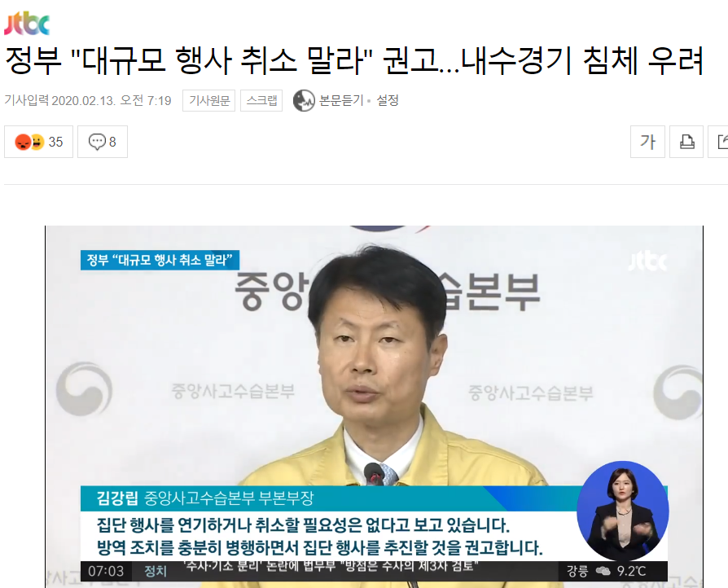
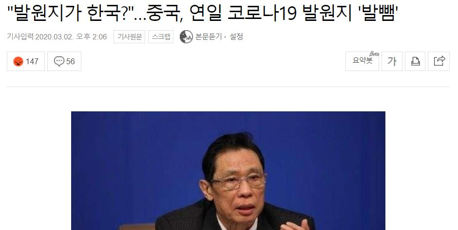
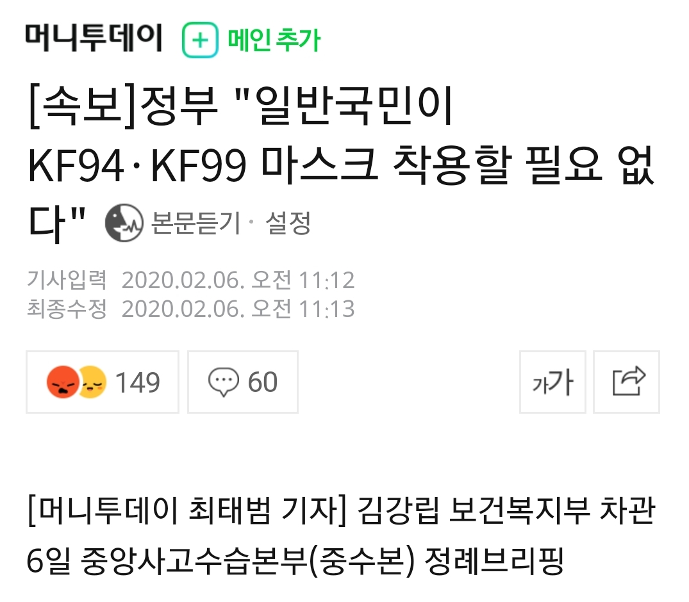
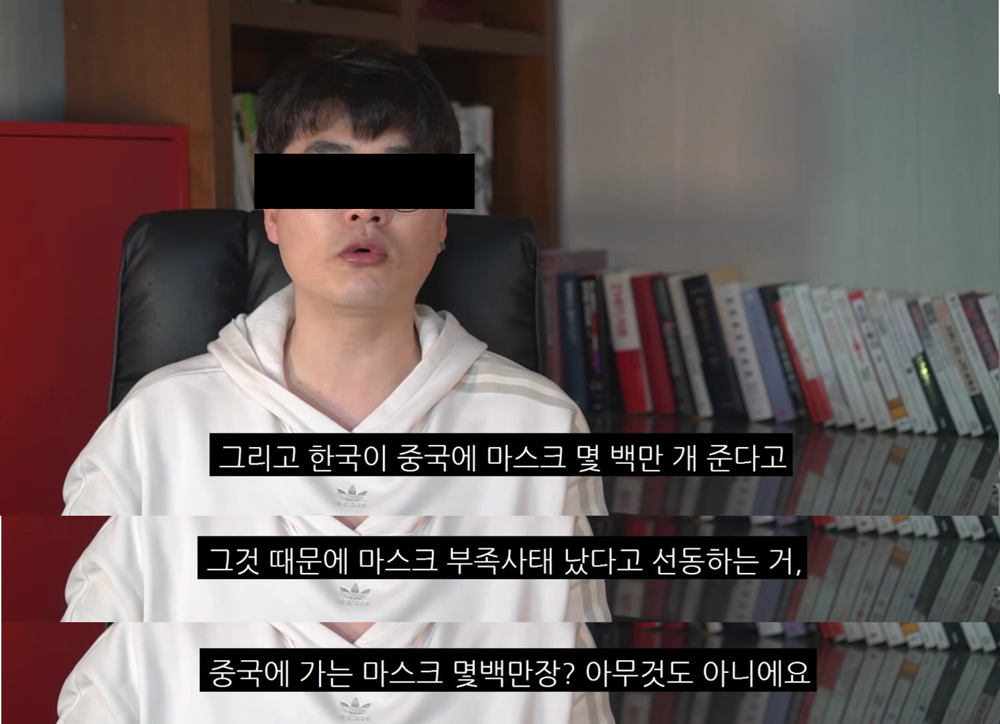
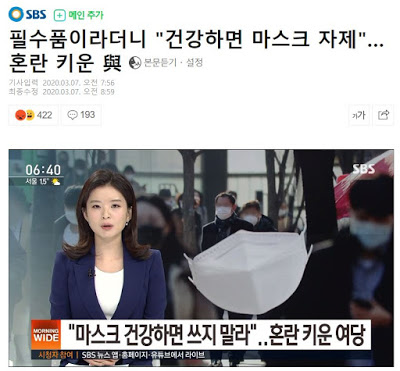

(PC) 각 사진에 마우스를 올리거나, (Mobile) 터치하시면
상세 내용을 확인하실 수 있습니다!
#입국 금지 #말 바꾸기
전세계 어느 국가도 입국 금지 조치를 하지 않았다며 의사협회 및 미래통합당 등의 중국 입국 금지에 대한 요구를 국민 불안감을 이용하는 것이라 했으나,
중국은 물론 현재는 한국까지 전세계의 70% 국가들에 입국 제한을 당했다.
#입국 금지 #출국 금지
방역이 잘 되어 입국 금지 조치가 필요 없다는데, 그러면 중국 우한에서 발생한 코로나 바이러스가 갑자기 한국에 펑 하고 나타났나?
그리고 입국 금지는 실효성이 없다면서 편하게 조질 수 있는 자국민들의 출국 금지는 실효성이 있다?
#중국 #훈수 #자국민
전세계 국가들은 물론이고, 전염병의 발원지인 중국에서마저 한국을 입국 제한하자
외교부에서 "우리는 대응 안했는데 너무하다"라며 국민 안전, 방역과 관계없이 중국에는 대응 일부러 안했다고 자백했는데, 그마저도 중국에게 반박당한다.
중국 같은 국가도 자국민이 외교보다 먼저이고 중국을 입국 제한하는 것을 이해한다는데, 문재인 정부는 자국민보다 중국, 북한이 먼저
#중국 #식민지 #입국 제한
중국에까지 입국 제한 당하고 자국민이 더 중요하다는 일침까지 당하자, 문재인 정부는 "방역이 철저한 중국의 조치를 이해한다"고 한다.
중국 방역이 철저해서 전세계가 이 난리인가?
#입국 제한 #방역
한국이 전세계의 70%에 육박하는 국가들에 입국 제한을 당하는 역사상 유례없는 일이 벌어지고 있다.
그런데 정부에선 입국 제한을 하는 것은 방역이 철저하지 못한 국가들의 투박한 조치라고 전세계 국가들에 굉장히 무례한 망언을 한다.
게다가 더 황당한 것은, 이 말을 한 시점이 한국이 확진자 수 전세계 2위, 인구 대비 확진자 수로는 중국보다 앞선 전세계 1위였다는 점이다.
전세계에서 최악의 방역을 보여주고 있는 한국 정부가 확진자 수 2자리 수 대인 국가들에 한 말이ㅋㅋㅋㅋ
#종식 선언 #플래그 #가짜뉴스
2월 중순에 문재인 정부는 코로나가 곧 종식된다는 전세계 그 어디도 하지 않은 섣부른 종식 선언을 했다.
그리고 영화에서 "무사히 돌아가면 같이 한 번 밥 한끼 하자"라는 말을 한 사람은 무조건 죽게 되는 플래그처럼,
잠복기인 최소 2주도 지나지 않은 며칠 후에 확진자가 하루에 수 백명씩 폭증한다.
즉, 정부에서 저 말을 할 때 이미 수천명이 보균자였는데 정부는 자화자찬하느라 섣불리 가짜뉴스를 유포한 것이다.

조심을 해도 모자랄 판에 코로나 종식됐다는 섣부른 개소리를 하고 대규모 행사를 취소 말라는 발표까지 했다.
#대규모 행사 #가짜뉴스
조심을 해도 모자랄 판에 코로나 종식됐다는 섣부른 개소리를 하고 대규모 행사를 취소 말라는 발표까지 했다.
그리고 잠복기만큼도 지나지 않은 바로 며칠 후 확진자가 폭증했다.
즉, 이 때 정부 말을 듣고 대규모 행사에 참석한 사람들은 슈퍼전파자가 되거나 전염병에 걸려 본인도 전파자가 된 것이다.

초반부터 중국을 입국 제한하지 않으면, 한국이 입국 제한 당하고 나중에 중국은 한국에 덮어씌울 것이란 예상이 많았지만
#중국 #발원지 #덮어씌우기
초반부터 중국을 입국 제한하지 않으면, 한국이 입국 제한 당하고 나중에 중국은 한국에 덮어씌울 것이란 예상이 많았지만
문재인 정부과 민주당은 발광하며 그럴 일 없을거라더니, 그것이 실제로 일어나고 있다.
#중국 #신천지
코로나 자체가 한국에서 발생했다고 덮어씌울 뿐만 아니라 한국 내에서 신천지 몰이하는 것을 중국이 적극적으로 활용하고 있다.
얼마 전, 중국에서 조직적으로 한국 커뮤니티 및 언론 기사 베스트 댓글 등을 조작한다는 차이나 게이트가 터졌는데
민주당, 문재인 지지자들이 하는 짓이 중국이 한국에 덮어씌우기 위해 조직적으로 하는 짓과 정확히 일치한다.
#입국 금지 #마스크 #의사협회
의사협회 등 전문가 단체들과 미래통합당은 1월 말, 2월 초부터 중국 입국 금지를 요구해왔으며 마스크 반출 금지도 요구했다.
하지만 민주당과 정부, 그 지지자들은 말도 안되는 소리라며 발광했지만, 실제로 전세계는 동일한 조치를 진작에 시행했으며, 한국까지 입국 제한을 당했고,
자기들이 말도 안되는 소리라던 조치들을 문재인 정부에서도 골든타임을 한참 놓친 몇 주나 지나서 시행한다.
처음부터 전문가들과 야당 말대로 이행했으면 코로나가 지금 이지경까지는 안왔을 것이다.
#확진자 #태세전환
코로나 초기에 아직 잠복기도 안끝난 시기였는데 한국에 확진자가 적은 것은 문재인 정부가 방역을 잘해서라는 개소리를 해대며 시각자료까지 유포해댔다.
잠복기 중이라 이미 보균자가 몇만명이 있을지 모르는 상황인데 그런 자화자찬을 해대더니,
확진자가 폭발적으로 증가하니 이제와선 정부에서 검사를 잘해서 그렇댄다ㅋㅋㅋ 그러면 중국은 검사자 수가 한국의 몇 배인데 전세계 최고의 방역 대국인가?
게다가 그마저도 6번 넘게 음성 판정을 받았는데 마지막에 양성 판정이 나올 정도로 정확도가 떨어지는게 현재의 검사 체계다.
#정부 맹신 #중국
잠복기인 사람이 많아서 확진자가 적을 땐 정부가 방역을 잘한거다, 방역 실패로 잠복기인 사람들의 증상이 나타나서 확진자가 폭발적으로 증가하니 정부가 검사를 빨리하는거다
이런 문재인, 민주당 지지자들의 뇌가 없는듯한 모습은 이 사진 속 중국인들과 뭐가 다를까?
중국은 저렇게 안하면 고문당할지도 모르니까 저런다고나 하지, 자발적 사상 노예나 다름 없는 것이 문재인, 민주당 지지자들이다.
#중국 #마스크 지원 #KF94 #식민지
의사협회, 야당 등에서 마스크 반출 금지하라는 요구를 비웃기라도 하듯, 중국에는 KF94 마스크와 방호복, 현금 등을 무지막지하게 지원했다.
그리고 돌려 받은 것은 한국이 코로나 원인이라는 덮어쓰우기와 부직포 마스크인데 문재인, 민주당 지지자들은 중국이 마스크를 10배로 돌려줬다며 환호했다.
하지만 부직포 마스크는 방역 효과가 없을 뿐더러 가격 차이로만 봐도 KF 마스크보다 수십배까지도 저렴하다.
#마스크 #자국민 #식민지
중국에는 KF94 마스크를 지원하더니, 정부에서 우한교민들을 격리하기로 강제로 지정한 지역의 주민들에겐 부직포 마스크나 쓰라고 줬다. 가격은 과거 기준으로도 몇 배까지 차이나며, 코로나로 마스크 값이 폭등한 기준으로는 수십배까지도 차이난다.
중국도 자국민이 먼저라고 한국을 까는데 한국은 그래도 중국인이 먼저랜다.

이렇게 마스크에 대해 비판 여론이 들끓자, 문재인 정부에서 "일반 국민은 KF 마스크 착용할 필요 없다."라고 한다.
#일반 국민 #마스크 #중국인 #식민지
이렇게 마스크에 대해 비판 여론이 들끓자, 문재인 정부에서 "일반 국민은 KF 마스크 착용할 필요 없다."라고 한다.
하지만, KF 마스크가 아니라면 방역 효과가 없는 것은 이미 증명된 사실이며, 그렇다면 중국에 KF 마스크가 아니라 부직포 마스크를 줬어야하지 않나?
문재인 정부에게는 중국인>>>>>>>한국 일반 국민인가보다.
#심각 격상 #의사협회 #위기 경보
의사협회 및 야당 등에서 이미 문재인 정부의 코로나 방역은 실패했으니 위기 경보를 격상해야 한다고 2월 중순부터 주장해왔다.
하지만 정부는 또 거부했으나 골든타임이 다 지난 몇 주 후에 위기 경보를 심각 단계로 격상했다.
중국 입국 제한, 마스크 반출 금지, 위기 경보 격상 등 전문가들과 미통당에서 주장했던대로 했으면 골든타임을 이렇게 몇 번이나 놓칠 일도 없고 코로나가 이 지경까지 오지도 않았을 것이다.
#심각 격상 #위기 경보
문재인, 민주당 지지자들도 위기 경보 격상하라는 미래통합당과 전문가들의 주장은 개소리다, 걔네는 전문가 아니고 정부가 전문가다, 무책임한 야당에 분노한다, 신천지다라더니
문재인 정부에서 골든타임 놓치고 한참 후에야 위기 경보 격상하니 "적폐넘들은 문통이 절대로 심각 단계로 격상 못할 거라 생각했을 거다", "문통에게 중요한건 국민 건강과 안전"이라고 한다.
몇 주전부터 격상하라해도 안하고 발광하던게 정부와 민주당, 그리고 문빠들 아닌가?
문빠들의 말로 문재인은 중국한테 훈수 들었던 것처럼 국민 건강과 안전이 전혀 중요하지 않았던 것이 증명이 되네?ㅋㅋㅋㅋ
#가장 큰 원인 #중국인 #한국인 #박능후
문재인 정부에서는 코로나의 가장 큰 원인은 중국인이 아닌 한국인이랜다ㅋㅋ 게다가 이 말을 몇 번이나 반복하며 윽박지르듯 말했다.
중국에서 코로나의 원인은 한국이라고 덮어씌우는 중인데 문재인 정부와 중국의 쿵짝이 아주 잘 맞다.
#중국 #방역 #훈수
코로나의 발원지인 중국에게 마스크, 방호복, 금전 등 간, 쓸개 다 빼주고도 듣는 소리가 "한국 대응 느리고 예방 조치도 불충분하다"

#현 상황 비유
현 상황 비유
아빠=문재인 정부, 아들=야당 및 전문가들, 누나=한국
#교수 정체 #예일대 박사
문재인 정부가 잘하고 있다며 코로나는 미통당과 신천지 탓이라는 예일대 박사가 있었는데, 알고보니 중국 및 한국 교수이자, 2018년엔 문재인 탓을 멈추라는 칼럼까지 썼던 사람임이 밝혀졌다.
자기들이 보기에도 중국 교수인게 밝혀지면 신뢰도가 떨어지니 예일대 박사라 한 것인데, 현 소속이 아닌 과거 소속을 쓰는 괴상한 짓을 해서 숨기려는게 있다는 티가 난다. 진중권 교수라 하지 진중권 서울대 학사라 하나?
#신천지 #덮어씌우기 #구로 콜센터
정부와 서울시에서 본인들의 방역 실패를 인정하지 않고 신천지에 덮어씌우려하는 과정이다. 코로나는 신천지라는 종교에서 전이되는 것이 아닌 확진자와의 접촉으로 전이되는 것인데 덮어씌우려고 환장을 했다.
결국 신천지 신도인 2명은 모두 음성 판정 받아 정부와 서울시의 방역 실패가 원인임이 밝혀졌는데도 아직도 인정 못하고 신천지 신도를 추가 조사하겠단다ㅋㅋㅋ 이 시간에 방역이나 똑바로 하지
#신천지 #서울시 #박원순
신천지를 미통당과 연관 시키려고 별짓 다했는데 알고보니, 미통당 출신의 전 자치단체장들이 몇 번이나 신천지의 법인 허가를 거부했던 것을 박원순 서울시장 취임하고 1달만에 허가하여 공식 단체로 인정받게 된 것이 밝혀진다.
#TIME #비교 #극딜
TIME지에 발빠르게 입국 제한 조치를 시행한 대만, 홍콩, 싱가폴을 칭찬하며 그와 대비되는 실패 사례로 한국을 들었다.
한국은 문재인 대통령이 섣부른 종식 선언 및 부진한 대응을 방역 실패의 원인으로 꼽았다.
TIME지도 미통당, 신천지가 조작했다고 하려나?
#민주당 #손절 #대구
민주당 청년위 정책위원의 발언대로면 대구는 문재인, 민주당 텃밭이 아니니 사람이 죽어나던 말던 상관 없다는거겠네?

#마스크 #충분 #문재인 #민주당
국민들은 마스크 없어서 평소의 10배가 넘는 가격을 주고 사고 있는데 문재인 정부는 마스크가 충분하댄다. 이게 가짜뉴스가 아니면 뭘까?

#마스크 #문재인 #헬마우스
그 정부, 정당에 그 지자자다. 가짜뉴스를 헬로 보낸다던 유튜버가 마스크 몇 백만장 중국에 보내준건 아무것도 아니라는 가짜뉴스를 유포하고 있다.
#마스크 #학교 #강제수거 #사회주의
마스크 충분하다더니 학교에서 학생들에게 나누어주려고 개별적으로 구매해둔 마스크를 정부에서 강제로 수거해갔다. 중국, 북한 같은 사회주의 국가에서나 벌어질 일이고,
실제로 불과 얼마 전 중국 정부가 국민들 마스크를 강제 수거해가는 것을 보고 비웃었는데 한국에서 똑같은 일이 벌어졌다.
오죽하면 한 교장은 피싱 문자인줄 알았다고 한다ㅋㅋㅋㅋ

#마스크 #의사 #강제수거 #사회주의
마스크 충분하다더니 학생들 마스크를 강제 수거해간 것도 모자라, 이젠 감염 위험이 가장 높은 의사들의 마스크도 강제 수거해갔다. 환자는 어떻게 돌보라는걸까?
#마스크 #적자 #강요
앞에선 마스크 충분하다 하고, 뒤에선 업체들에게 하루 수백만원의 적자를 강요했던 것이 밝혀졌다.
그러면서도 정부는 원자재를 구하기 위한 어떠한 노력도, 세금 혜택도 내놓은 것이 없다.
#마스크 #업체 #생산중단
정부에서 적자를 강요한 탓에 20년간 마스크를 만들어온 업체는 마스크 생산 중단을 선언하기에 이른다.
안그래도 마스크가 부족한 시국에 정부의 앞에선 충분하다는 대국민 사기, 뒤에선 강압때문에 생산량이 더 줄어들게 된 것

#민주당 #마스크
민주당 선거대책위원은 마스크 충분한데 국민들이 오바해서 엄살 떨고 있다며 자기 동네에선 못산적이 없단다. 대체 어느 동네였을까?
#마스크 #의사 #박능후
정부에서 의사들의 마스크를 강제 수거해가놓고 의사들이 마스크 없다고 하는건 쌓아두려고 욕심부려서랜다ㅋㅋㅋㅋㅋ
그런데 의사들은 KF 마스크도 아닌, 덴탈 마스크를 며칠 씩 사용하고 있는 것이 현실이었다.

마스크 꼭 끼라더니 마스크가 부족해지자 건강하면 마스크 끼지 말랜다. 마스크 충분하다며?
#마스크 #자제 #양보
마스크 꼭 끼라더니 마스크가 부족해지자 건강하면 마스크 끼지 말랜다. 마스크 충분하다며?
마스크 충분하댔다가, 강제수거했다가, 업체에 강요했다가, 마스크 쓸 필요 없댔다가ㅋㅋㅋㅋ
상반되는 주장을 한 번에 해대서 어느 한 쪽이 사실이어도 민주당과 정부는 가짜뉴스를 유포했던 것이 무조건 확정인 상황이다.
#국민 책임 #떠넘기기
마스크 낄 필요 없다더니 이제 방역의 책임은 국민 탓이라고 떠넘기기를 한다. 메르스는 정부의 무능이 낳은 참사라며?
#코스피 #주가
임기 내 코스피 3000시대 올까?랬는데 그 그래프를 반대로 뒤집으면 되는 그래프를 만들어놨다.
#가짜뉴스 #민주당 #정부
가짜뉴스 법적 대응하겠다는 민주당과 청와대. 이 사이트에 모아둔 것만 해도 청와대와 민주당은 상습적 가짜뉴스 유포자인데 엄중한 처벌을 받아야하지 않을까? 왜 셀프 처벌 안하고 있나?
#북한 #미사일 #로켓배송
이 와중에도 북한 바라기 문재인은 자국민은 죽어나는데 북한을 돕겠다는 개소리를 해댔다.
그리고 바로 다음 날 북한은 미사일로 화답해주며 로켓배송이 익일 배송임을 확인시켜주었다.
국민 생명을 담보로 정치적 자존심과 한 달 후 있을 선거에서 표 떠나갈까봐 늦장 대응으로 인한 방역 실패를 인정하지 않고,
골든타임을 놓치고서야 뒤늦게 태세 전환하는 코로남불 사례를 "메시지 보내기" 버튼을 통해 추가 제보해주세요.
코로남불 추가 제보